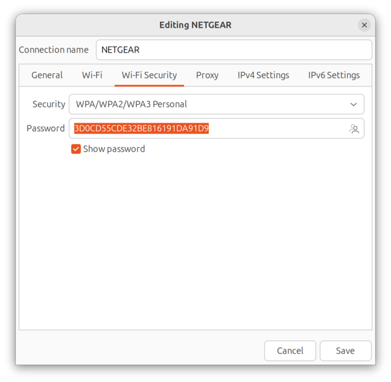

Wireless tools
Linux offers a rich set of terminal tools for working with wireless networks. There are also graphical tools available. I'm going to start with my favorite GUI tool Sparrow Wi-Fi, which is a free, open source (FOSS) tool.
Sparrow Wi-Fi
Overview from the GitHub site
Sparrow-wifi has been built from the ground up to be the next generation 2.4 GHz and 5 GHz Wifi spectral awareness tool. At its most basic it provides a more comprehensive GUI-based replacement for tools like inSSIDer and linssid that runs specifically on linux. In its most comprehensive use cases, sparrow-wifi integrates
- wifi
- software-defined radio (hackrf)
- advanced bluetooth tools (traditional and Ubertooth)
- traditional GPS (via gpsd)
- drone/rover GPS via mavlink
all in one solution.
Written entirely in Python3, Sparrow-wifi has been designed for the following scenarios:
- Basic wifi SSID identification
- Wifi source hunt - Switch from normal to hunt mode to get multiple samples per second and use the telemetry windows to track a wifi source
- 2.4 GHz and 5 GHz spectrum view - Overlay spectrums from Ubertooth (2.4 GHz) or HackRF (2.4 GHz and 5 GHz) in real time on top of the wifi spectrum (invaluable in poor connectivity troubleshooting when overlapping wifi doesn't seem to be the cause)
- Bluetooth identification - LE advertisement listening with standard bluetooth, full promiscuous mode in LE and classic bluetooth with Ubertooth
- Bluetooth source hunt - Track LE advertisement sources or iBeacons with the telemetry window
- iBeacon advertisement - Advertise your own iBeacons
- Remote operations - An agent is included that provides all of the GUI functionality via a remote agent the GUI can talk to.
- Drone/Rover operations - The agent can be run on systems such as a Raspberry Pi and flown on a drone (its made several flights on a Solo 3DR), or attached to a rover in either GUI-controlled or autonomous scan/record modes.
- The remote agent is JSON-based so it can be integrated with other applications
- Import/Export - Ability to import and export to/from CSV and JSON for easy integration and revisiualization. You can also just run 'iw dev scan' and save it to a file and import that as well.
- Produce Google maps when GPS coordinates are available for both discovered SSID's / bluetooth devices or to plot the wifi telemetry over time.
- Integration with Elasticsearch to feed wireless and optionally bluetooth scan data into Elastic Common Schema compliant indices.
Installation on Ubuntu 24.04 and newer
git clone https://github.com/ghostop14/sparrow-wifi
cd sparrow-wifi
python -m venv venv --upgrade-deps --prompt="Sparrow"
source venv/bin/activate
which python3
You may have to use which python3 depending on your system. You should see a path similar to this:
/home/mhubbard/Insync/GD/04_Tools/sparrow-wifi/venv/bin/python3
The path means that the virtual environment is working. If you see:
/usr/bin/python3
Stop! It means the venv didn't start correctly and you are working with your system python.
Install the requirements
pip3 install gps3 python-dateutil requests pyqt5 pyqtchart numpy matplotlib
python -m pip install QScintilla gps3 dronekit manuf python-dateutil numpy matplotlib
Verify the reqirements are installed:
pip list
Package Version
------------------ -----------
certifi 2025.7.14
charset-normalizer 3.4.2
contourpy 1.3.3
cycler 0.12.1
dronekit 2.9.2
fastcrc 0.3.2
fonttools 4.59.0
gps3 0.33.3
idna 3.10
kiwisolver 1.4.8
lxml 6.0.0
manuf 1.1.5
matplotlib 3.10.5
monotonic 1.6
numpy 2.3.2
packaging 25.0
pillow 11.3.0
pip 25.2
pymavlink 2.4.48
pyparsing 3.2.3
PyQt5 5.15.11
PyQt5-Qt5 5.15.17
PyQt5_sip 12.17.0
PyQtChart 5.15.7
PyQtChart-Qt5 5.15.17
python-dateutil 2.9.0.post0
QScintilla 2.14.1
requests 2.32.4
six 1.17.0
urllib3 2.5.0
Ubuntu 25.04 doesn't install the wireless-tools package by default
Sparrow-WiFi uses the Linux iwconfig tool from wireless-tools. Install it using:
Test iwconfig
In this example, my wireless interface is wlp61s0
iwconfig wlp61s0
wlp61s0 IEEE 802.11 ESSID:"test"
Mode:Managed Frequency:5.18 GHz Access Point: 9C:8C:D8:11:7A:F0
Bit Rate=1.1342 Gb/s Tx-Power=22 dBm
Retry short limit:7 RTS thr:off Fragment thr:off
Power Management:on
Link Quality=70/70 Signal level=-22 dBm
Rx invalid nwid:0 Rx invalid crypt:0 Rx invalid frag:0
Tx excessive retries:0 Invalid misc:8 Missed beacon:0
Run sparrow-wifi
Warning
You have to include the path to the venv python because sparrow needs root access. Is you don't include the path, the sudo command will override the venv and call the system python
When sparrow starts up, click the ip scan button to start a scan.
Create a function to start sparrow
Below is a simple function that you can add to your .zshrc or custom zsh alias file. I prefer to put my custom functions into the zsh custom aliases file. Mine is at ~/.oh-my-zsh/custom/my-aliases.zsh but you can use any name in the custom folder as long as the extension is .zsh
To add it to .zshrc:
To add it to the custom .zsh alias file:
Then paste this function in:
sparrow () {
cd ~/Insync/GD/04_Tools/sparrow-wifi
source venv/bin/activate
sudo /home/mhubbard/Insync/GD/04_Tools/sparrow-wifi/venv/bin/python3 sparrow-wifi.py
}
Use ctrl+x to exit nano, press y to save the file.
Type exec zsh to reload the shell
Now you can enter sparrow to start sparrow-wifi without manually entering all the commands.
Wireless Terminal commands
Linux has many built-in or freely available terminal based tools for viewing information the wireless Interface.
Display SSIDs
To get a quick, static, view of all SSIDs visible to your laptop:
nmcli device wifi list
List all connections
This command will list all connections on your laptop. The TYPE column lists the connection type and the DEVICE column lists the interface that is connected. This list will grow long for a network engineer because every SSID is recorded.
nmcli connection show
NAME UUID TYPE DEVICE
Work 4adc6bf7-3a1c-4c0d-af1a-709974497468 ethernet enx0050b61ca0c0
LAB d135c39f-bcc1-4666-9951-6d5c32c3bf94 wifi wlp61s0
lo 2a4b667f-68db-47bd-bb6c-a396b833b671 loopback lo
virbr0 231172c6-33ab-4176-81aa-950b75b55e27 bridge virbr0
vnet0 3d320508-d381-4a78-9ad4-b235b2a28828 tun vnet0
Home-Lab 3d160ffd-982d-46d2-8f87-de9cb9a87e13 ethernet --
NETGEAR 5a899d4d-5af0-4d6b-b999-a1897709fd0c wifi --
Profile 1 d05e76a7-292b-4841-9933-d78fe78c0494 ethernet --
test e6e95de6-0825-4c72-8da4-4b0c54f86264 wifi --
Wired connection 1 c23c0b73-a5f9-3e45-b074-7b03f8d269e2 ethernet --
Display the SSID and password
This is useful is you need to share the password of a wireless network. A mobile phone can scan the QR code to connect:
List WiFi properties
Show details for the SSID "test" connection with the preshared key password (PSK).
Note: without --show-secrets option, secrets would not be displayed.
nmcli --show-secrets connection show "test"
This returns a lot of information, too much to post here.
If you are looking for just the PSK password, you can pipe the output to grep:
nmcli --show-secrets connection show test | grep security.psk
802-11-wireless-security.psk: SuperSecretPasswd
The advantage of this over the sudo nmcli -a -p device wifi show-password ifname wlp61s0 command is that you don't have to be connected to the SSID to retrieve the password.
List connections for the Wi-Fi interface wlp61s0.
nmcli -f connections device show wlp61s0
CONNECTIONS.AVAILABLE-CONNECTION-PATHS: /org/freedesktop/NetworkManager/Settings/8
CONNECTIONS.AVAILABLE-CONNECTIONS[1]: d135c39f-bcc1-4666-9951-6d5c32c3bf94 | LAB
The log UUID is the connection ID for SSID LAB.
List only GENERAL and WIFI-PROPERTIES sections for wlp61s0
This command is nice because it lists the:
- Chip vendor - Intel
- The chip model, a Wi-Fi 6E, AX210 in this case.
- The driver the chip is using, iwlwifi
- The driver version, 6.14.0.24
- The firmware version, 89.4d42c933.0 ty-a0-gf-a0-89.uc
- The Hardware address
iwconfig
This is an oldie but goodie in Linux!
iwconfig is part of the wireless-tools for Linux package maintained by Jean Tourrilhes.
Ubuntu 25.04 doesn't install the wireless-tools package by default
If you didn't install Sparrow-WiFi above, install wireless-tools using:
Test iwconfig
In this example, my wireless interface is wlp61s0
iwconfig wlp61s0
wlp61s0 IEEE 802.11 ESSID:"test"
Mode:Managed Frequency:5.18 GHz Access Point: 9C:8C:D8:11:7A:F0
Bit Rate=1.1342 Gb/s Tx-Power=22 dBm
Retry short limit:7 RTS thr:off Fragment thr:off
Power Management:on
Link Quality=70/70 Signal level=-22 dBm
Rx invalid nwid:0 Rx invalid crypt:0 Rx invalid frag:0
Tx excessive retries:0 Invalid misc:8 Missed beacon:0
From the MAN pages:
Iwconfig is similar to ifconfig(8), but is dedicated to the wireless interfaces. It is used to set the parameters of the network interface which are specific to the wireless operation (for example: the frequency). Iwconfig may also be used to display those parameters, and the wireless statistics (extracted from /proc/net/wireless).
That last line means that we can display wireless interface statistics using the Linux watch command. Watch is a tool that runs a command at a regular interval and displays the output to the screen. The default is 2 seconds, -n1 sets it to 1 second.
watch -n1 iwconfig
wlp61s0 IEEE 802.11 ESSID:"test"
Mode:Managed Frequency:5.18 GHz Access Point: 9C:8C:D8:11:7A:F0
Bit Rate=1.2009 Gb/s Tx-Power=22 dBm
Retry short limit:7 RTS thr:off Fragment thr:off
Power Management:on
Link Quality=70/70 Signal level=-24 dBm
Rx invalid nwid:0 Rx invalid crypt:0 Rx invalid frag:0
Tx excessive retries:0 Invalid misc:8 Missed beacon:0
This is useful when restarting an AP or troubleshooting wireless. With watch running, you can glance at the screen and see if the interface is connected.
You can also use watch with an ethernet interface. In this example I was connected to a switch that I needed to reboot. I wanted to monitor the Ethernet interface and know when it was back up. The default time for watch is 2 seconds but you can override that with the -n (interval) switch. In this case 2 seconds was fine.
watch ip address show enx0050b61ca0c0
10: enx0050b61ca0c0: <NO-CARRIER,BROADCAST,MULTICAST,UP> mtu 1500 qdisc fq_codel state DOWN group default qlen 1000
link/ether 00:50:b6:1c:a0:c0 brd ff:ff:ff:ff:ff:ff
10: enx0050b61ca0c0: <BROADCAST,MULTICAST,UP,LOWER_UP> mtu 1500 qdisc fq_codel state UP group default qlen 1000
link/ether 00:50:b6:1c:a0:c0 brd ff:ff:ff:ff:ff:ff
inet 192.168.10.130/24 brd 192.168.10.255 scope global dynamic noprefixroute enx0050b61ca0c0
valid_lft 3567sec preferred_lft 3567sec
inet6 fd24:42b2:12ce:0:756c:178d:b308:c785/64 scope global temporary dynamic
valid_lft 604769sec preferred_lft 86063sec
inet6 fd24:42b2:12ce:0:f5af:c424:4a19:d4e6/64 scope global dynamic mngtmpaddr noprefixroute
valid_lft 2591982sec preferred_lft 604782sec
inet6 fe80::2c7f:3933:39b9:ac0e/64 scope link noprefixroute
valid_lft forever preferred_lft forever
You can see that initially the interface was down with no IP Address, then watch refreshes and the port has an ip address.
iwgetid
The iwgetid command is designed to be used with shell or Perl scripts. You get the same output as iwconfig but in a format that makes it easy to save in a variable. You can tell the command is old because the scheme switch outputs in a format for PCMCIA cards!
iwgetid -h
Usage iwgetid [OPTIONS] [ifname]
Options are:
-a,--ap Print the access point address
-c,--channel Print the current channel
-f,--freq Print the current frequency
-m,--mode Print the current mode
-p,--protocol Print the protocol name
-r,--raw Format the output as raw value for shell scripts
-s,--scheme Format the output as a PCMCIA scheme identifier
-h,--help Print this message
Examples
iwgetid -a
wlp61s0 Access Point/Cell: 9C:8C:D8:11:7A:F0
iwgetid -a -r
9C:8C:D8:11:7A:F0
iwgetid -f
wlp61s0 Frequency:5.18 GHz
iwgetid -f -r
5.18e+09
iwgetid -m
wlp61s0 Mode:Managed
iwgetid -m -r
2
iwgetid -p
wlp61s0 Protocol Name:"IEEE 802.11"
iwgetid -s
test
A function for iwgetid
Below is a simple function that you can add to your .zshrc or or custom zsh alias file. I prefer to put my custom functions into the zsh custom aliases file. Mine is at ~/.oh-my-zsh/custom/my-aliases.zsh but you can use any name in the custom folder as long as the extension is .zsh
To add it to .zshrc:
To add it to the custom .zsh alias file:
Then paste this function in:
iwget () {
APMac=`iwgetid -ar`
IntFace=`iwgetid -f`
ID=`iwgetid -s`
echo "AP Mac:" $APMac && echo "Interface:" $IntFace && echo "SSID:" $ID
}
Use ctrl+x to exit nano, press y to save the file.
Type exec zsh to reload the shell
Now you can enter
iwlist
From the man page:
Name iwlist - Get more detailed wireless information from a wireless interface.
Description
Iwlist is used to display some additional information from a wirelessnetwork interface that is not displayed by iwconfig(8). The main argument is used to select a category of information, iwlist displays in detailed form all information related to this category, including information already shown by iwconfig(8).
Options
- iwlist [interface] scanning
- iwlist [interface] frequency
- iwlist [interface] rate
- iwlist [interface] keys
- iwlist [interface] power
- iwlist [interface] txpower
- iwlist [interface] retry
- iwlist [interface] event
- iwlist [interface] auth
- iwlist [interface] wpakeys
- iwlist [interface] genie
- iwlist [interface] modulation
- iwlist --help
- iwlist version
With this one iwlist command you will get detailed information about all the APs your card can see:
iwlist wlp61s0 scanning
wlp61s0 Scan completed :
Cell 01 - Address: 9C:8C:D8:11:7A:F0
Channel:36
Frequency:5.18 GHz (Channel 36)
Quality=70/70 Signal level=-23 dBm
Encryption key:on
ESSID:"test"
Bit Rates:12 Mb/s; 18 Mb/s; 24 Mb/s; 36 Mb/s; 48 Mb/s
54 Mb/s
Mode:Master
Extra:tsf=000000292b2a65bb
Extra: Last beacon: 3526ms ago
IE: Unknown: 000474657374
IE: Unknown: 01069824B048606C
IE: Unknown: 030124
IE: IEEE 802.11i/WPA2 Version 1
Group Cipher : CCMP
Pairwise Ciphers (1) : CCMP
Authentication Suites (1) : PSK
In this example:
Cell Address: 9C:8C:D8:11:7A:F0 is the radio MAC of the AP
IE stands for Generic Information Events. I do not know how to decode them!
Transmit Power
Note that the power switch requires sudo.
sudo iwlist wlp61s0 txpower
wlp61s0 unknown transmit-power information.
Current Tx-Power=22 dBm (158 mW)
Bit Rate
iwlist wlp61s0 rate
wlp61s0 unknown bit-rate information.
Current Bit Rate:866.7 Mb/s
More Information
Get more detailed wireless information from a wireless interface
Display Saved Networks
When you connect to a network, the settings, including the username/password, are saved. To view them, open a terminal and enter:
A GUI will open and you can select a saved SSID:
Display the password
If you click on an SSID, then click the gear icon, Wi-Fi Security, it will open a new dialog where you can change the Security type and view/change the password.

Wavemon
Another wireless monitoring tool for Ubuntu.
Installation
sudo nala install wavemon
From the MAN pages - Wavemon is an ncurses-based monitoring application for wireless network devices. It plots levels in real-time as well as showing wireless and network related device information.
The wavemon interface splits into different "screens". Each screen presents information in a specific manner. For example, the "info" screen shows current levels as bargraphs, whereas the "level" screen represents the same levels as a moving histogram.
Run wavemon with sudo to get the most information.
sudo wavemon
By default, it opens on the information screen.
You can press s to bring up the scanning screen. This is useful to see all of the SSIDs your laptop can see along with AP MAC, signal quality, power, channel and frequency.
Note that you can see hidden SSIDs also.
Cheat Sheets
Ubuntu server Cheat Sheet Linux Bash Shell Cheat Sheet Linux Commands Cheat Sheet